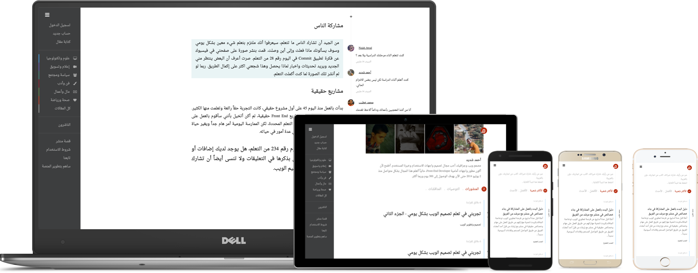

منشر
فكّر بالعربية
مجتمع مميز من المدونين
انضم لمجتمع من المدونين العرب، الذين يعبرون عن رأيهم، ويناقشون الأفكار المتنوعة، ويشاركون خبراتهم في مجالاتهم، ليبنوا بيئة تشاركية، لا تحصر المعرفة عند أحد، ومتقبلة لاختلاف وجهات النظر.
تضمين مواد داعمة لمقالك

وقريبا سيكون هناك المزيد...

- تحميل صور من جهازك أو بلصق رابط
- صور متحركة من Giphy.com
- فيديو من يوتيوب، فيسبوك وغيرها
- موسيقى وبودكاست من ساوند كلاود
- منشورات من فيسبوك وتويتر
- مصادر برمجية من JSFiddle وغيرها
- عروض تقديمية Slideshare وغيرها
- أسئلة تفاعلية من Qzzr.com
صفحتك الشخصية
- قائمة بمنشوراتك والمقالات التي علقت عليها وأوصيت بها
- مسوداتك وتعديل ملفك الشخصي تظهر لك فقط

تقارير واحصائيات مقالاتك
- عدد المشاهدات
- عدد القراءات
- المقالات التي وصيت بها
- المقالات التي علقت عليها
وقريبا سيكون هناك المزيد
- بلدان زوار مقالات
- توضيح الاحصائيات عبر الزمن، لترى المشاهدات والقراءات في تواريخ معينة

دعم التصفح بدون إنترنت
يمكنك منشر من تصفح المقالات والصفحات التي قمت بزيارتها مسبقاً، لتتمكن من قراءة المقالات بدون اتصالك بالانترنت.
تصميم متجاوب على العديد من الشاشات

توصيات لتبدي إعجابك بالمقال
قم بالضغط على زر التوصية لتقدم توصية للمقال.